RE：从零开始的虚幻动态立绘初体验
关键词： 动态立绘、Live2D、UE4、游戏开发
授权协议：CC BY-NC-SA 3.0，转载请标注来源
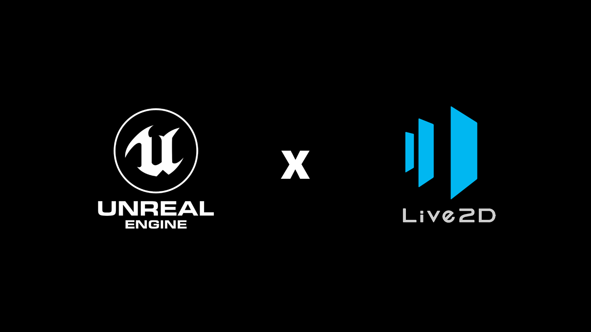

Miara In UE4！
前言
进入2020年，在二次元主题的各类游戏中，动态立绘技术的应用已经成为业内主流。通过对原本静态的2D插画进行多层的处理，利用各层间视觉的移动提升用户的视觉体验。被利用在游戏、视频、虚拟主播等新文创领域。
目前主流的动态立绘技术分为Live2D和E-MOTE两种实现，Live2D为业内主流的选择。
| SDK价格对比 | Live2D | E-mote |
|---|---|---|
| 教育用户（学生/教师） | 免费 | 5,000日元- |
| 小型用户（年销售额小于1000万日元） | 免费 | 免费 |
| 中型用户（年销售额小于1亿日元） | 100,000日元 | 100,000日元- |
| 大型用户（无限制） | 600,000日元 | 300,000日元- |
| 编辑器 | FREE版免费。PRO版单独购买（每份授权限1人使用），小型用户29,800日元；中、大型用户：140,000日元。多买优惠。 | FREE版免费。授权自带1年（不限产品）/2年（限一个产品系列）全功能编辑器使用权 |
Live2D与E-mote的授权价格
这两种主流的动态立绘引擎在Unity中都有官方开发的成熟实现，已经可以很方便的接入到引擎工具链中进行调用。但虚幻引擎一直还不能感受到这一技术带来的便利。
正所谓，高手在民间。很多时候，往往这些问题的解决要靠社区和一些独立开发者来实现。笔者在研究类似技术的过程中，发现了国内开发者naru（@Arisego）制作的Live2D Cross UE4插件 “UnRealLive2D” ，可以将动态立绘的Live2D技术以插件模组的形式引入到虚幻引擎供开发者使用。
以下是项目托管的地址（可能需要科学加速）：
Arisego/UnrealLive2D: UE4 plugin for live2d model | github.com
这是开发者对项目的介绍：
在本文的后面部分以简单的步骤讲解该插件的使用方法，读者可自行斟酌阅读。
虚幻动态立绘-快速入门指南
0：先决条件检查
在开始前，需要进行以下准备：
- UnRealLive2D插件源代码
- 虚幻引擎 版本4.24+
- Visual Studio 2017（推荐2019，需安装C++游戏开发负荷）
- CubismNativeFramework（Live2D逻辑驱动库）【注意遵守官方授权】
CubismNativeFramework的下载地址为：
Live2D/CubismNativeFramework | github.com
笔者选用的是CNF4-beta.2.1版本。
1：创建测试项目
创建一个全新的UE4游戏类型项目（读者可自选）。使用Blank（空白）模板，并设定项目为C++项目。

笔者的设定界面（参考）
电脑配置较弱的读者可以关闭WindowsDefender来加速生成过程，期间UE4会唤醒VS进行C++项目初始化
当UE4窗口完全展开后，关闭新创建的工程，并用资源管理器定位到刚刚创建的工程目录。
在工程根目录下新建Plugins目录，并在其下创建UnrealLive2D目录；
将源代码复制到刚刚新创建的目录下；
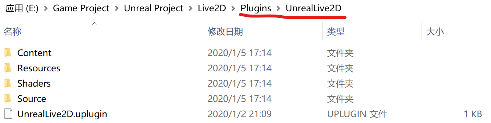
步骤对照
接下来，打开位于当前目录下的Source\ThirdParty\CubismLibrary目录，
然后将CubismNativeFramework包内的Core项目模块复制到当前目录；

步骤对照
保留打开的文件夹目录，以备后用。
NOTE：该插件亦可被放置在UE4引擎的插件目录内
2：在引擎中启用插件功能
双击工程根目录内的uproject文件启动项目，你将会看到以下指示框（需要重新构建）；

提示插件需要重新构建的提示框
NOTE：构建时间一般在一分钟以内
进入引擎后可到“插件”窗口检查该插件是否生效；
以教程的方法，该插件最终位于“项目/Other”分类下
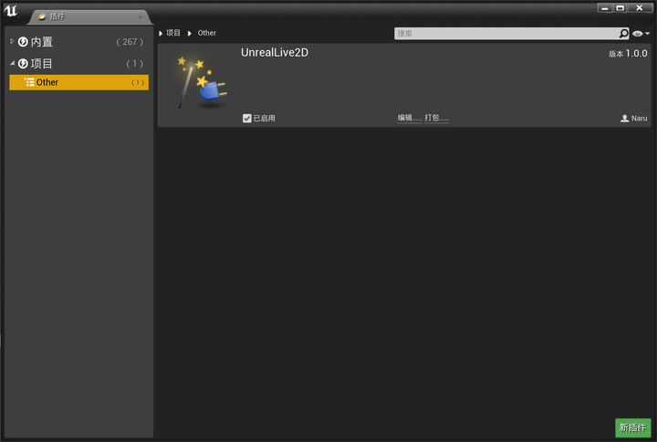
步骤对照
自此，该插件已经被安装到项目上，可供使用了。
3：使用插件内置的实例来测试效果
在打开的虚幻编辑器内点击内容浏览器的上的“显示或隐藏源面板”；

步骤对照
NOTE：显示插件自带的内容需要对内容管理器进行设定，这需要点击内容管理器右下角的“视图选项”，并勾选内容中的“显示插件内容”
点击UnrealLive2D目录分类，右侧的缩略详情中有实例内容；
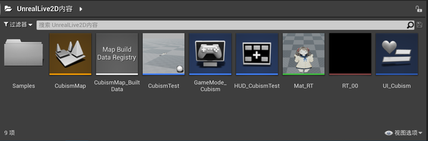
步骤对照
接下来，请自行浏览需要的内容吧！
4.将自己的Live2D角色导入项目
下面将引导大家如何从零开始将Live2D资源放进项目内并完成构建；
在内容管理器内创建项目所需文件夹；
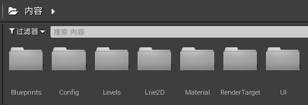
将准备好的Live2D角色资源放到已经创建好的目录下；
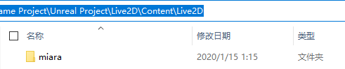
注意：如果引擎显示是否需要导入请选择否，以防止资源文件被破坏。
笔者的资源文件来自于Live2D官方的范例角色Miara。读者可前往Live2D官方网站下载使用，使用资源时需注意版权和使用规范。
新建空白的示例关卡，用于展示内容；
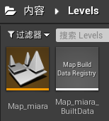
在Render Target（渲染目标）目录下创建新的渲染目标，用于填充Live2D资源；
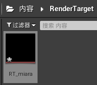
根据Live2D源资讯内容，调整渲染目标的参数；
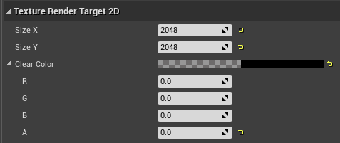
在Material（材质）目录下创建材质；
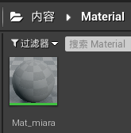
打开之前创建的根据渲染目标对材质进行参数设定；
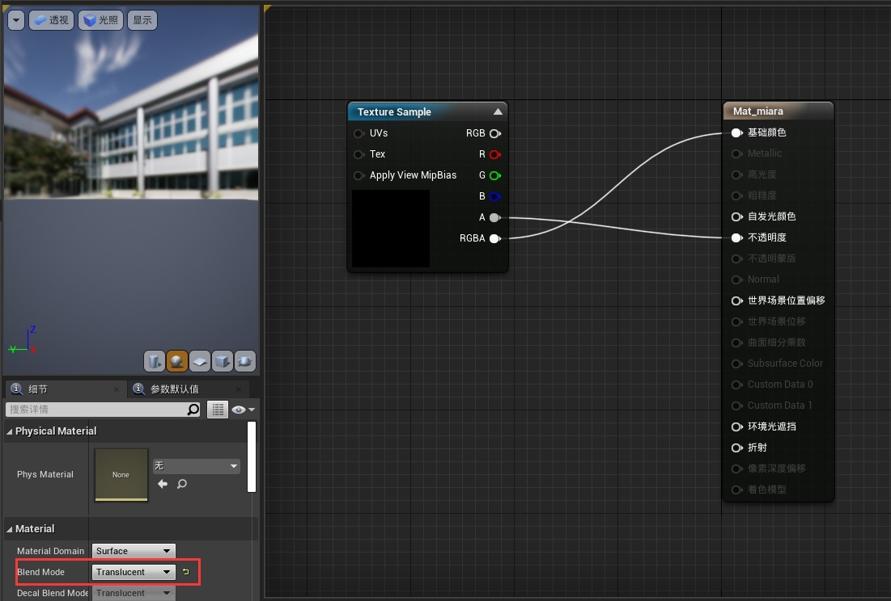
材质贴图即为之前创建的渲染目标
然后，创建新的蓝图类（Actor）；

打开创建的蓝图类，替换类的根节点为静态网格体，选择静态网格体为Plane（平面），再给其赋予之前创建的材质；
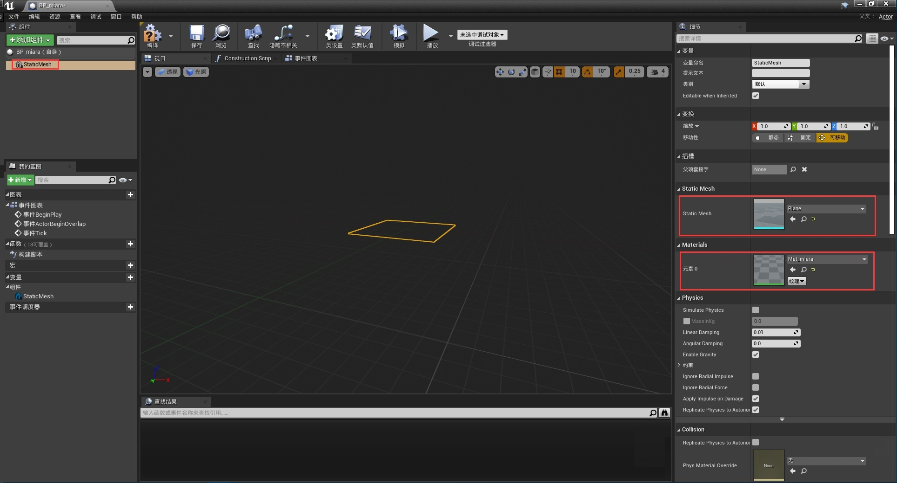
NOTE：显示引擎内置的内容需要对内容管理器进行设定，这需要点击内容管理器右下角的“视图选项”，并勾选内容中的“显示引擎内容”
完成后切换到事件图表。创建新变量，命名为“Cubism”，类型为“Cubism Object”；
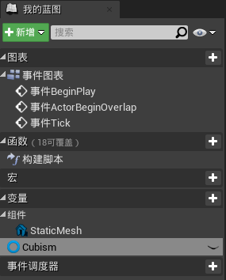
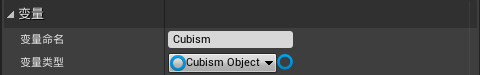
连接蓝图（解释见蓝图注释）；

调用Live2D资源的方案
编译、保存后将创建好的蓝图类放入场景并按照自己的需求调整位置，最后运行项目即可；

效果如图
大功告成！
5.在HUD上运行Live2D
如何在HUD上运行Live2D呢？这很简单！
首先创建用户界面资源，然后打开创建的资源，并在画布上放入Image（图片）；

注意：笔者的填写参数仅供参考，实际制作时候请自行计算
创建HUD类，并完成用户界面创建逻辑；
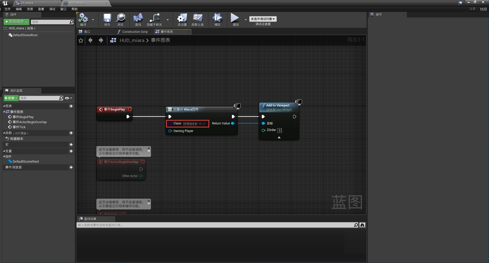
在Config（配置）目录下创建新的GameMode（游戏模式）；
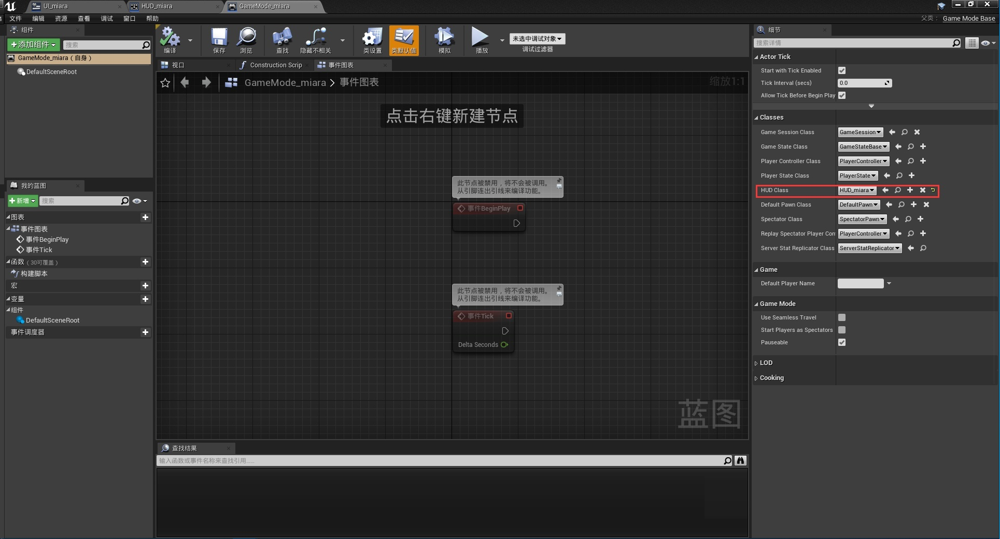
记得在项目设置内设置完成的游戏模式；

运行一下试试看吧！

效果如图
大功告成！
完成效果：
Unreal Cross Live2D！
6.一些注意事项
请使用X64模式进行打包，该项目不能运行在X86状态下；
如果重新导入插件而导致工程编译失败，删除工程和插件目录下的临时文件即可解决；
请记住将Live2D资源目录添加到需要打包的额外非资源目录清单内，否则将无法在运行时看到内容；
在这里，感谢开发者naru（@Arisego）为圈子带来了这样的便利插件。
Ta的Github页面：
Ta的个人博客：
本文以CC BY-NC-SA 3.0协议发布，转载请标注来源。
本博客所有文章除特别声明外，均采用 CC BY-NC-SA 3.0 协议 ，转载请注明出处！